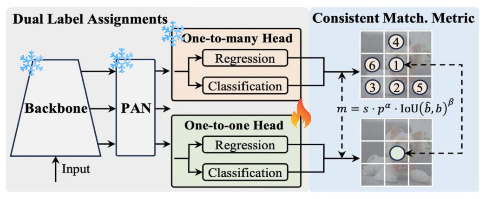

YOLO9-E2E : Making YOLO9 NMS Free
An end-to-end, NMS-free implementation of YOLOv9 leveraging the LibreYOLO framework.
Abstract
Traditional object detection architectures, including YOLOv9, rely on Non-Maximum Suppression (NMS) during post-processing to eliminate duplicate bounding boxes. However, NMS introduces significant latency. In this project, I introduce YOLO9-E2E, an experimental NMS-free (End-to-End) variant of the YOLOv9 Tiny model built using the LibreYOLO framework. By incorporating a dedicated One-to-One (1-to-1) head matching strategy (inspired by the NMS-free training methodology introduced in the YOLOv10 paper) alongside standard training, I achieve direct object detection without NMS post-processing. Because of my single RTX 3080 GPU setup, I decided to only finetune the newly introduced One-to-One head by migrating pretrained YOLOv9 weights. While training the whole model end-to-end could potentially improve the performance further, this targeted finetuning approach is highly resource-efficient and yielded strong performance. YOLO9-E2E retains a competitive performance on the COCO val2017 dataset, achieving an mAP50 of 0.4813 and mAP50-95 of 0.3403, offering a seamless, NMS-free object detector for edge and real-time deployment.
Implementation
Building an E2E YOLOv9
To eliminate Non-Maximum Suppression (NMS), I transitioned the architecture from a standard One-to-Many representation to a direct One-to-One matching scheme, drawing inspiration from the NMS-free training methodology introduced in the YOLOv10 model paper:
- LibreYOLO Framework: Leveraged the extensible pipeline of LibreYOLO to easily configure and custom-tailor the heads of the YOLOv9-Tiny architecture.
- One-to-One Head Addition: Standard models generate multiple bounding box predictions per object during inference, necessitating NMS. By integrating a dedicated One-to-One assignment head, the model learns to output exactly one bounding box per ground-truth object.
- Dual Label Assignment: During training, both a One-to-Many head and a One-to-One head are utilized. The One-to-Many head acts as a strong auxiliary supervisor to guide feature representation, while the One-to-One head is optimized for direct, NMS-free inference.
Targeted One-to-One Finetuning
Training an entire object detector from scratch requires extensive computational resources. Because of my single RTX 3080 GPU setup, I decided to only finetune the newly initialized One-to-One head:
- Weights Migration: Copied and loaded pretrained weights for the Backbone, Neck, and auxiliary One-to-Many head from a standard pretrained YOLOv9 model.
- Selective Freezing & Training: Kept standard layers frozen and only optimized the One-to-One head. This allowed for incredibly fast and lightweight training. Note that while training the whole model end-to-end could potentially improve the performance further, this targeted finetuning approach was ideal for my hardware constraints and achieved highly successful metrics.

Figure 1: YOLO9-E2E Weight Migration and Targeted Training pipeline, freezing standard features and optimizing only the One-to-One Head.
Validation & Results
Validation was conducted on the full COCO val2017 dataset (5,000 images) using an NVIDIA GPU. Below are the detailed COCO evaluator results for the baseline YOLOv9-Tiny (NMS) model, followed by a comparative analysis of the NMS-free YOLO9-E2E model.
Baseline YOLOv9-t (NMS) Detailed COCO Metrics:
| COCO Metric | Value | Description |
|---|---|---|
| mAP50-95 | 0.3716 | Mean Average Precision across standard thresholds (IoU=0.50:0.95) |
| mAP50 | 0.5235 | Average Precision at 0.50 IoU (IoU=0.50) |
| mAP75 | 0.3951 | Average Precision at 0.75 IoU (IoU=0.75) |
| mAP_small | 0.1187 | Average Precision for small objects (area < 32² pixels) |
| mAP_medium | 0.3376 | Average Precision for medium objects (32² < area < 96² pixels) |
| mAP_large | 0.5325 | Average Precision for large objects (area > 96² pixels) |
Comparison: Standard YOLOv9-t (NMS) vs. YOLO9-E2E (NMS-Free):
| Model Variant | NMS-Free | mAP @ 0.5 (mAP50) | mAP @ 0.5:0.95 (mAP50-95) |
|---|---|---|---|
| YOLOv9-t (Standard Baseline) | ❌ No (Requires NMS) | 0.5235 | 0.3716 |
| YOLO9-E2E (Ours) | ✅ Yes (NMS-Free) | 0.4813 | 0.3403 |
*Note: The performance of the NMS-Free model could potentially improve further if the entire model were trained fully end-to-end, similar to the NMS baseline version, rather than only finetuning the One-to-One head under hardware constraints.
Model Usage
The pretrained YOLO9-E2E model weights are hosted on Hugging Face. You can access and download each model variant separately from their respective repositories:
- Tiny (t) variant: LibreYOLO/LibreYOLO9E2Et
- Small (s) variant: LibreYOLO/LibreYOLO9E2Es
- Medium (m) variant: LibreYOLO/LibreYOLO9E2Em
- Compact (c) variant: LibreYOLO/LibreYOLO9E2Ec
You can easily load and run NMS-Free predictions on your images using the official LibreYOLO package API:
from libreyolo import LibreYOLO, SAMPLE_IMAGE
# Load the pretrained NMS-Free Tiny model from HuggingFace / local path
model = LibreYOLO("LibreYOLO9E2Et.pt")
# Run direct NMS-Free inference on a sample image
result = model(SAMPLE_IMAGE, save=True)